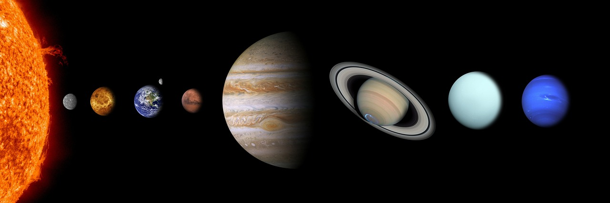

SOBRE O SITE
O objetivo deste site é apresentar informações sobre o Sistema Solar, com foco em um público de todas as idades, especialmente as crianças. A ideia é despertar a curiosidade e o interesse pelo conhecimento.
Até o século XVI, acreditava-se que a Terra era o centro do universo. Que tudo, inclusive o Sol, girava em torno do eixo de nosso planeta. Mais tarde, com Nicolau Copérnico, começou-se a considerar a ideia de que o Sol seria o centro do universo. Os anos se passaram e nossos conhecimentos sobre o espaço se desenvolveram. Chegamos à resposta de que existe um grande infinito: galáxias, outros planetas, estrelas maiores que o Sol. Por fim, vimos que o Sol, influenciava diretamente a órbita de oito planetas, dentre eles, a Terra.
Origem do Sistema Solar

O Sistema Solar é formado pelo Sol e pelos planetas: Mercúrio, Vênus, Terra, Marte, Júpiter, Saturno, Urano e Netuno. Os planetas seguem essa ordem partindo, como ponto inicial, o Sol. Não só os planetas que circulam em torno do Sol: existem estrelas, satélites naturais (chamadas de luas) e outros corpos espaciais. Todo o Sistema Solar está dentro de algo maior: a Via Láctea (a galáxia formada por milhares de estrelas e corpos celestes e que abriga o Sistema Solar).
O sol e o Sistema Solar tiveram origem há 4,5 bilhões de anos a partir de uma nuvem de gás e poeira que girava ao redor de si mesma. Sob a ação de seu próprio peso, essa nuvem se achatou, transformando-se num disco, em cujo centro formou-se o sol. Dentro desse disco, iniciou-se um processo de aglomeração de materiais sólidos, que, ao sofrer colisões entre si, deram lugar a corpos cada vez maiores, os outros planetas.
A composição de tais aglomerados relacionava-se com a distância que havia entre eles e o sol. Longe do astro, onde a temperatura era muito baixa, os planetas possuem muito mais matéria gasosa do que sólida, é o caso de Júpiter, Saturno, Urano e Netuno. Os planetas perto dele, ao contrário, o gelo evaporou, restando apenas rochas e metais, é o caso de Mercúrio, Vênus, Terra e Marte.
Planetas do Sistema Solar
Os planetas não produzem luz, apenas refletem a luz do Sol, que é a estrela do Sistema Solar. Teorias afirmam que os planetas também foram formados a partir de porções de massa muito quente e que todos estão de resfriando. Alguns, entre eles a Terra, já se resfriaram o suficiente para apresentar a superfície sólida.
Um corpo celeste é considerado um planeta quando, além de não ter luz própria, gira ao redor de uma estrela.
Oito planetas compõem o sistema Solar: Mercúrio, Vênus, Terra, Marte, Júpiter, Saturno, Urano e Netuno.
Obs.: A descrição acima está na ordem de afastamento do Sol.
Os planetas têm forma aproximadamente esférica. Os seus movimentos principais são o de rotação e o de translação. Cada planeta possui um eixo de rotação em relação a Sol, o mais inclinado deles é o planeta-anão Plutão, pois seu eixo de rotação em relação ao Sol é de 120º, olhe a figura.
Planetas se movimentam
Movimento de Rotação
No movimento de rotação, os planetas giram em torno do seu próprio eixo, uma linha imaginária que passa pelo seu centro. O observador terrestre tem dificuldade de perceber o movimento de rotação da Terra. Para isso deve-se notar que o Sol, do amanhecer ao anoitecer, parece se mover da região leste em sentido oeste. O mesmo acontece, à noite, com a Lua, as estrelas e demais astros que vemos no céu.
O movimento de rotação da Terra dura, aproximadamente 24horas - o que corresponde a um dia. A Terra, por ser esférica, não é iluminada toda de uma vez só. Conforme a Terra gira em torno do seu eixo, os raios de luz solar incidem sobre uma parte do planeta e a outra fica à sombra.
O ciclo do dia e da noite ocorrem graças a rotação. Enquanto o planeta está girando sobre seu próprio eixo é dia nas regiões que estão iluminadas pelo Sol (período claro) e, simultaneamente, é noite nas regiões não iluminadas (período escuro).
Movimento de Translação
O movimento de translação é executado pelos planetas ao redor do Sol, e o tempo que levam para dar uma volta completa é denominado período orbital. No caso da Terra esse período leva cerca de 365 dias e aproximadamente 6 horas para se completar. A Terra, no seu movimento de translação, forma uma elipse pouco alongada (bem próxima a circular). Já o planeta Netuno traça a sua órbita elíptica de forma bastante alongada.
Em razão do movimento de translação e da posição de inclinação do eixo da Terra, cada hemisfério fica, alternadamente, mais exposto aos raios solares durante um período do ano. Isso resulta nas quatro estações do ano: verão, outono, inverno e primavera. Nos meses de dezembro a março, o Hemisfério Sul - localizado ao sul da linha do Equador - fica mais exposto ao Sol. É quando os raios solares incidem perpendicularmente sobre pelo menos alguns pontos do Hemisfério Sul. É verão nesse hemisfério. Depois de seis meses, nos meses de junho a setembro, a Terra já percorreu metade da sua órbita. O Hemisfério Norte - localizado ao norte da linha do Equador - fica mais exposto ao Sol e, assim, os raios solares incidem perpendicularmente sobre pelo menos alguns pontos do Hemisfério Norte. É verão no Hemisfério Norte.
Enquanto é verão no Hemisfério Norte com os dias mais longos e as noites mais curtos, é inverno no Hemisfério Sul, onde os dias tornam-se mais curtos e as noites mais longas. E vice-e-versa.
Em dois períodos do ano (de março a junho e de setembro a dezembro) ha posições da Terra, na sua órbita, em que os dois hemisférios são iluminados igualmente. É quando ocorrem, de forma alternada nos dois hemisférios, as estações climáticas primavera e outono.
As estações do ano são invertidas entre os hemisférios Sul e Norte. Por isso é possível, numa mesma época do ano, por exemplo, pessoas aproveitarem o verão numa praia no Hemisfério Sul, enquanto outras se agasalharem por causa de uma nevasca de inverno no Hemisfério Norte.
Nas regiões perto da linha do Equador, tanto em um hemisfério quanto no outro, ocorre constantemente a incidência dos raios do Sol, faz calor durante todo o ano. Há apenas a estação das chuvas e a estação da seca.
Em virtude da "curvatura da Terra" e da inclinação do eixo de rotação da Terra em relação ao seu plano de órbita, os polos recebem raios de Sol bastante inclinados. Por um longo período do ano, os raios solares não chegam aos polos, por isso essas são regiões muito frias.
Fontes
Site Planeta Terra: http://planeta-terra.info/sistema-solar.html
Site Só Biologia: http://www.sobiologia.com.br/conteudos/Universo/sistemasolar.php
Site da UFRGS: http://astro.if.ufrgs.br/esol/esol.htm
Site Brasil Escola: http://www.brasilescola.com/geografia/cometa.htm
Site Wikipedia: https://pt.wikipedia.org/wiki/Lua
Site Pixabay - https://pixabay.com/pt/videos/terra-globo-pa%C3%ADs-%C3%A1frica-%C3%A1sia-1393/
Site YouTube - MuseuMMp - https://www.youtube.com/watch?v=yD6jrfTf0Xg